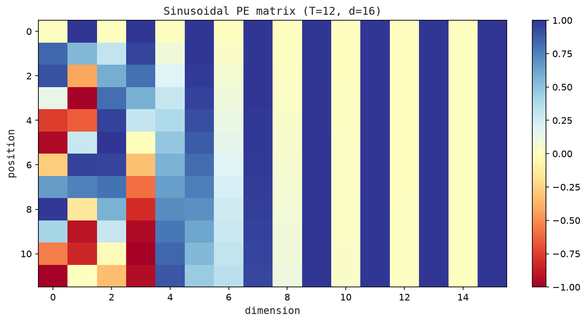
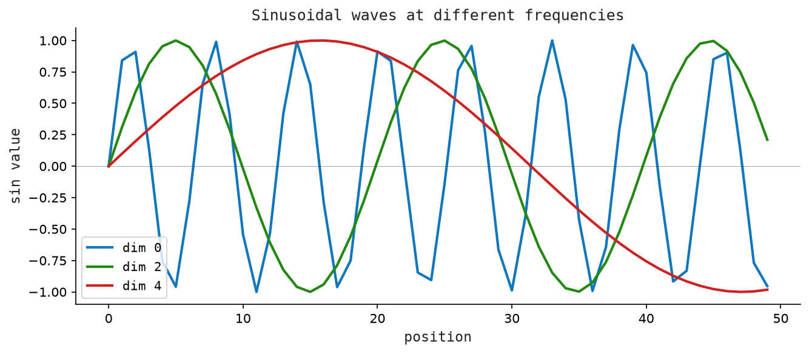

5 Positional Encoding — Giving Order to Meaning
After the embedding step we have a matrix \(X \in \mathbb{R}^{T\times d}\). Each row X[t] is a vector representing token t. But here is the problem: attention processes all tokens simultaneously — there is no inherent notion of “token 3 comes after token 2.” If you shuffled the rows, the model would not know.
We fix this by adding a position vector to each token’s embedding. The combined vector carries both what (the token identity) and where (the position).
5.1 The Idea
After embedding, every token is a vector. But those vectors carry no information about where in the sentence the token appears. “Dog bites man” and “man bites dog” produce the same three vectors, just in a different order — and attention would treat both sentences identically if we did nothing.
The fix is straightforward: before passing the vectors into attention, we add a position signal to each one. Token 0 gets a small nudge in one direction; token 1 gets a different nudge; token 50 gets yet another. The nudge is itself a vector the same size as the embedding, and it is designed so that no two positions produce the same nudge.
Think of it like stamping each page of a manuscript with its page number before sending it to the printer. The text on the page does not change — but now the order is recoverable.
There are two ways to design the position stamp:
- Learned: keep a second lookup table, one row per position, and let the model learn the best stamps from data. GPT-2 does this.
- Sinusoidal: compute the stamp from a fixed mathematical formula using waves of different frequencies. The original transformer paper did this. We study both, because the sinusoidal approach illuminates why position signals work.
5.2 Sinusoidal Positional Encoding
For position t and dimension i (where \(0 \leq i < d\)):
\[ \begin{aligned} PE(t,\, 2i) &= \sin\!\left(\frac{t}{10000^{2i/d}}\right) \\ PE(t,\, 2i+1) &= \cos\!\left(\frac{t}{10000^{2i/d}}\right) \end{aligned} \]
Even-indexed dimensions use sine; odd-indexed dimensions use cosine. The denominator 10000^(2i/d) controls the frequency — it grows exponentially with i, so low dimensions have high frequency (vary rapidly with t) and high dimensions have low frequency (vary slowly).
Why this formula works:
- Unique per position: Every
tproduces a distinct vector. - Bounded: All values lie in
[−1, 1], so they do not dominate the token embeddings. - Smooth: Nearby positions have similar encodings, so the model can learn “close in position → related in meaning.”
- Extrapolatable: The formula works for any
t, even positions not seen during training.
A key property: The encoding for position t+k can be expressed as a linear transformation of the encoding for position t. This means the model can learn to attend to “the token 3 positions back” using a simple linear operation — no memorization of absolute positions required.
5.3 The Math
Full formula for the positional encoding matrix \(PE \in \mathbb{R}^{T\times d}\):
\[ \begin{aligned} PE[t, i] &= \sin(t \cdot \omega_{i/2}) && \text{if } i \text{ is even} \\ PE[t, i] &= \cos(t \cdot \omega_{\lfloor i/2\rfloor}) && \text{if } i \text{ is odd} \end{aligned} \]
where \(\omega_k = 1 / 10000^{2k/d}\).
After building PE, the position-encoded input is:
\[ \tilde{X} = X + PE \quad \in \mathbb{R}^{T \times d} \]
The model now works with \(\tilde{X}\) instead of X.
5.4 The Matrix: Worked Example
Let T = 4 (4 tokens), d = 8 (8-dimensional).
First compute the frequencies \(\omega_k\) for k = 0, 1, 2, 3:
\[ \begin{aligned} \omega_0 &= 1 / 10000^{0/8} = 1.0 \\ \omega_1 &= 1 / 10000^{2/8} \approx 0.1 \\ \omega_2 &= 1 / 10000^{4/8} = 0.01 \\ \omega_3 &= 1 / 10000^{6/8} \approx 0.001 \end{aligned} \]
Now compute PE row by row (position t = 0, 1, 2, 3):
PE[0] = [sin(0·1.0), cos(0·1.0), sin(0·0.1), cos(0·0.1), ...]
= [0.000, 1.000, 0.000, 1.000, 0.000, 1.000, 0.000, 1.000]
PE[1] = [sin(1·1.0), cos(1·1.0), sin(1·0.1), cos(1·0.1), ...]
= [0.841, 0.540, 0.0998, 0.995, 0.00999, 0.99995, ...]
PE[2] = [sin(2·1.0), cos(2·1.0), sin(2·0.1), cos(2·0.1), ...]
= [0.909, -0.416, 0.198, 0.980, 0.01999, 0.99980, ...]
PE[3] = [sin(3·1.0), cos(3·1.0), sin(3·0.1), cos(3·0.1), ...]
= [0.141, -0.990, 0.296, 0.955, 0.02999, 0.99955, ...]Notice: dimension 0-1 (high frequency) changes dramatically between positions. Dimension 6-7 (low frequency) barely changes. Together they form a unique fingerprint for each position.
The final input matrix \(\tilde{X} = X + PE\):
X̃[t] = embed_vector[t] + PE[t]
For t=0: [-0.90, 0.10, 0.20, -0.30, ...]
+ [ 0.00, 1.00, 0.00, 1.00, ...]
= [-0.90, 1.10, 0.20, 0.70, ...]Figure Figure 5.1 shows the sinusoidal positional encoding values as a heatmap over positions and dimensions.

5.5 The Code: Positional Encoding in Python
The matrix data abstraction from Chapter 2 carries over unchanged.
# tag::make_matrix[]
def make_matrix(rows: int, cols: int, fill: float = 0.0) -> Matrix:
return [[fill for _ in range(cols)] for _ in range(rows)]
def shape(matrix: Matrix) -> tuple[int, int]:
return len(matrix), len(matrix[0]) if matrix else 0
# end::make_matrix[]
# tag::random_matrix[]
def random_matrix(
rows: int,
cols: int,
rng: random.Random,
scale: float | None = None,
) -> Matrix:
scale = math.sqrt(2.0 / (rows + cols)) if scale is None else scale
return [[rng.uniform(-scale, scale) for _ in range(cols)] for _ in range(rows)]
# end::random_matrix[]sinusoidal_position encodes one position as a vector of alternating sine and cosine values. Dimension pair \(k\) oscillates at frequency \(\omega_k = 1/10000^{2k/d}\), so each position gets a unique fingerprint.
def sinusoidal_position(position: int, d_model: int) -> Vector:
row = []
for i in range(d_model):
k = i // 2
omega = 1.0 / (10000.0 ** (2.0 * k / d_model))
row.append(math.sin(position * omega) if i % 2 == 0 else math.cos(position * omega))
return rowsinusoidal_encoding builds the full \([T \times d]\) matrix by stacking one row per position.
def sinusoidal_encoding(max_length: int, d_model: int) -> Matrix:
return [sinusoidal_position(position, d_model) for position in range(max_length)]add_positional_encoding sums the token embedding matrix \(X\) with the PE matrix element-wise, giving \(\tilde{X} = X + PE\).
def add_positional_encoding(tokens: Matrix, positions: Matrix) -> Matrix:
return matrix_add(tokens, positions[: len(tokens)])Demo. Run with python3 src/python/chapter_demos.py:
def chapter_05() -> dict[str, object]:
encoding = sinusoidal_encoding(4, 6)
return {
"shape": (len(encoding), len(encoding[0])),
"first": encoding[0],
"second": encoding[1],
}Figure Figure 5.2 shows the positional encoding matrix whose rows are added to token embeddings.
Figure Figure 5.3 shows how sinusoidal waves at different frequencies encode positions across dimensions.

5.6 Learned vs Sinusoidal Positional Embeddings
GPT-2 and GPT-3 use learned positional embeddings — a second embedding matrix \(P \in \mathbb{R}^{T_{max} \times d}\), trained alongside the token embedding matrix.
Pros:
- Can adapt to the specific patterns in the training data.
Cons:
- Cannot generalize to sequences longer than \(T_{max}\) (the training context length).
Sinusoidal encoding is deterministic and extrapolates naturally. Modern architectures (LLaMA, Mistral) use a more sophisticated variant called Rotary Positional Encoding (RoPE) which applies the positional information inside the attention computation rather than at the input stage.
5.7 Key Takeaways
- Without position information, the model is permutation-invariant — it cannot distinguish
"dog bites man"from"man bites dog". - Sinusoidal PE encodes position using sine/cosine at exponentially-spaced frequencies.
- The encoding is added to the token embedding: \(\tilde{X} = X + PE\).
- Nearby positions have high cosine similarity; distant positions have lower similarity.
- Modern models (GPT-2: learned; LLaMA: RoPE) vary the method but the purpose is the same.
What’s next? We now have \(\tilde{X} \in \mathbb{R}^{T\times d}\) — a matrix that knows both what each token is and where it sits. Now the interesting part begins: attention, the mechanism that lets tokens share information with each other. Chapter 4.